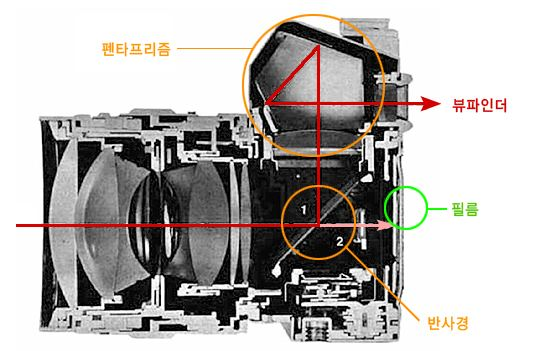
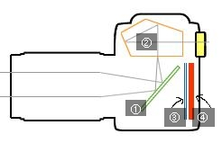
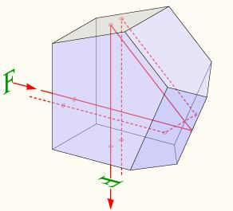

2010-11-10 17:47:24 Penta Prism Ref : http://blog.naver.com/bbbean?Redirect=Log&logNo=30003525064http://cafe.naver.com/35mmadapter.cafe?iframe_url=/ArticleRead.nhn%3Farticleid=1168http://kin.naver.com/qna/detail.nhn?d1id=5&dirId=50102&docId=102036293&qb=7Y6c7YOA7ZSE66as7KaY&enc=utf8§ion=kin&rank=3&search_sort=0&spq=0&pid=gLpUswoi5UZssve9ayosss--486364&sid=TNpXAzNQ2kwAADR9B98결상으로 꼬인 빛을 한번 더 꼬아서 입력 필드대로 보이게 만든다...